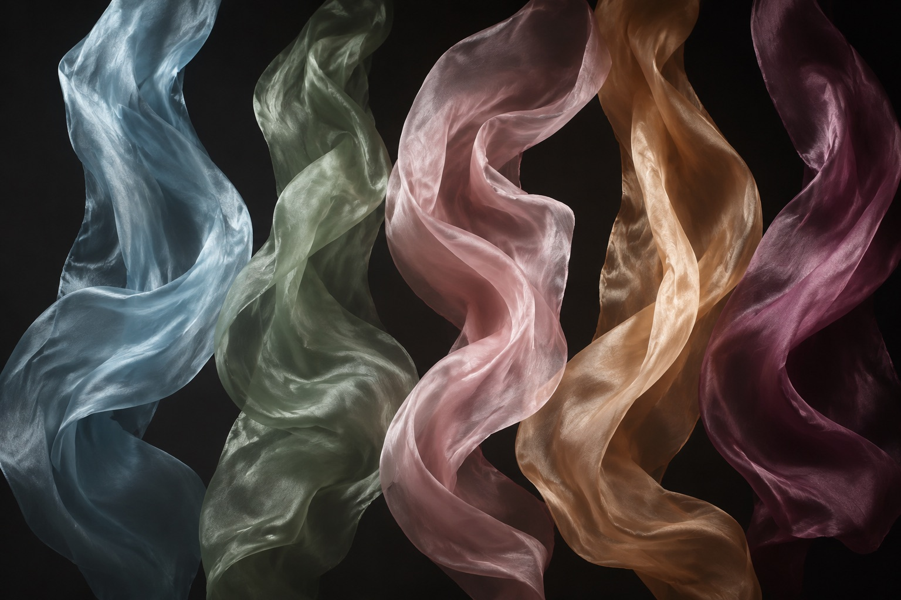
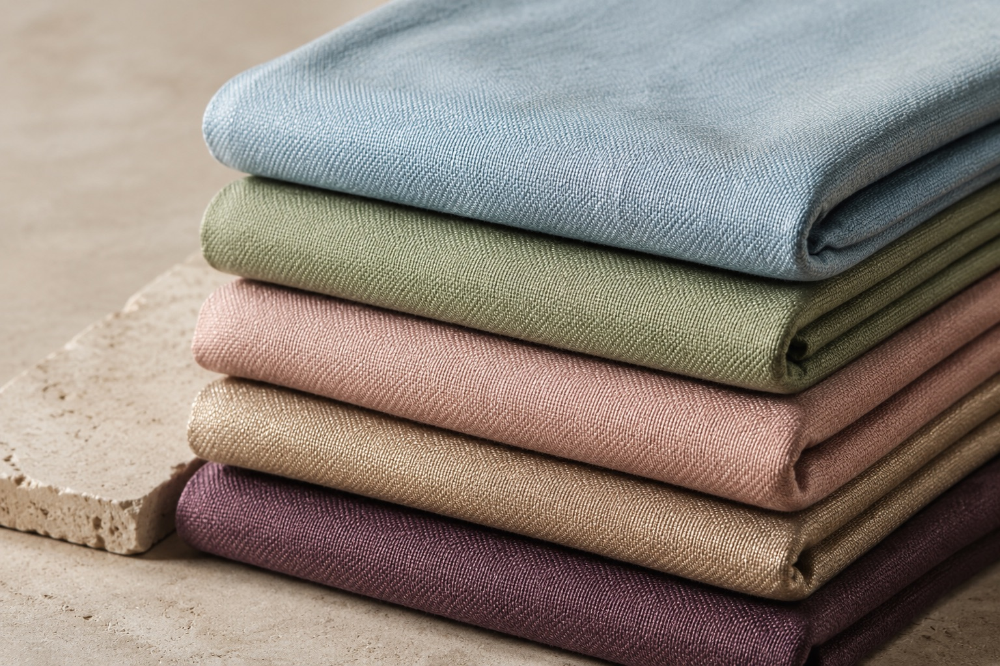
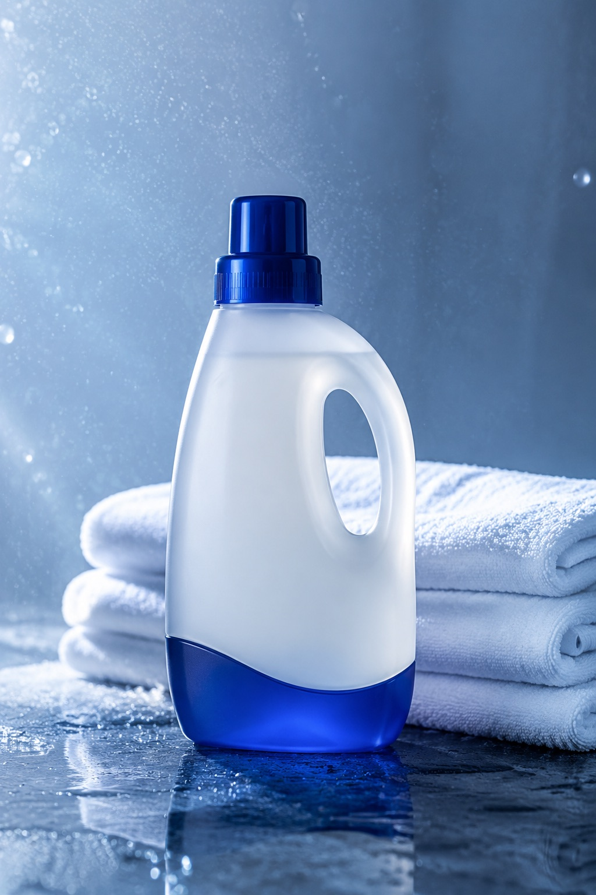
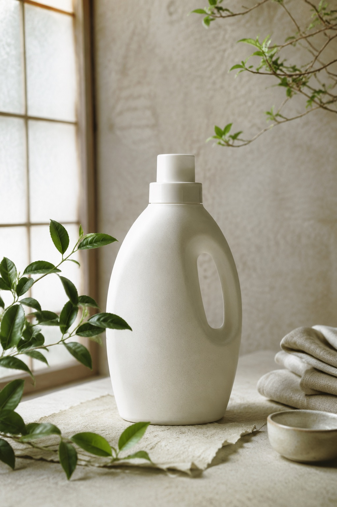
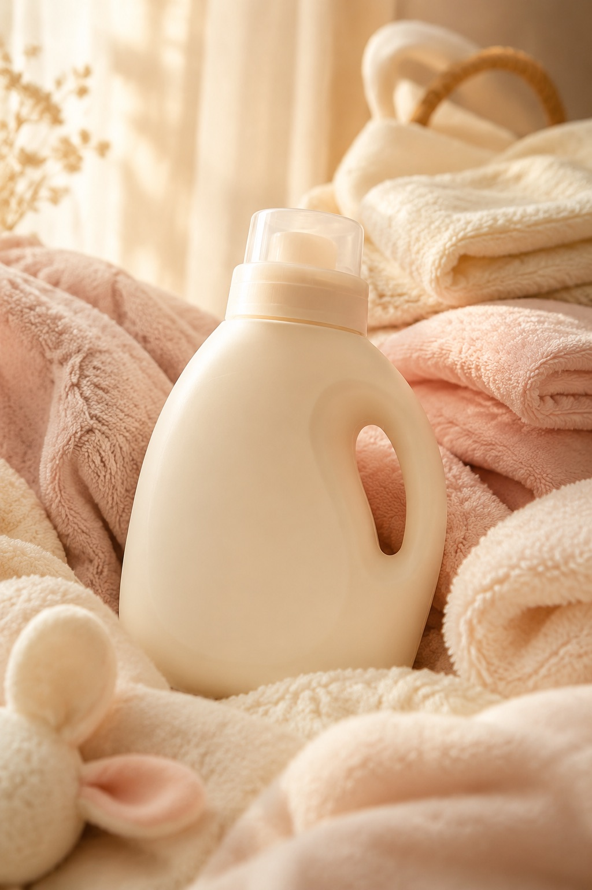
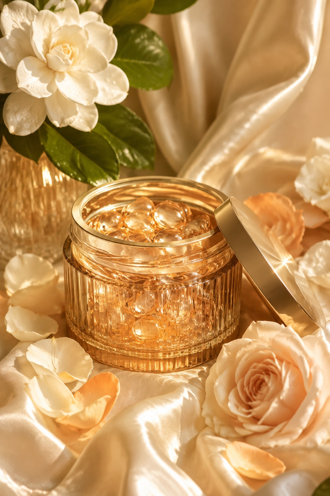
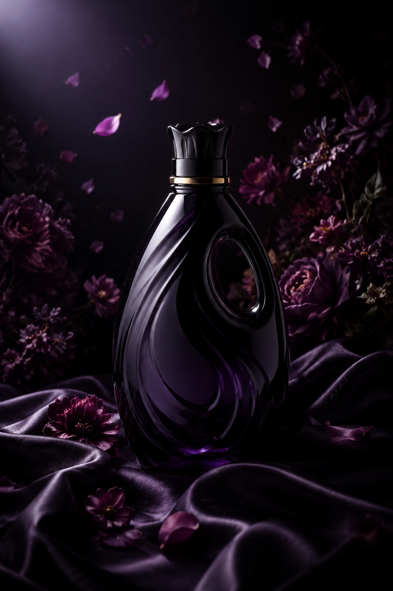

五大品牌 · 一个完整答案
衣物洗护不止一种答案。从医院级的专业除菌，到沙龙级的衣物香水——五个品牌沿同一条光谱排布，覆盖每个家庭、每种面料、每一种对「干净」的想象。
From mass disinfection to haute fragrance — one complete laundry care matrix.
干净是一种科学，
香气是一种情绪。
我们用五个品牌，
把这两端缝合成一条完整的线。
光谱的一端，是威露士以专业除菌成分守住的健康底线；另一端，是纺优美以沙龙香工艺为衣物穿上的「香水」。之间，是奈十八本的植萃本味、Lamama 的母婴柔护、菁华的花木香氛——每一档，都对应一种真实的生活场景。

Walch · Since Hygiene
专业除菌 · 全家安心
光谱的起点，是「干净」最坚硬的定义。威露士以专业除菌科技为衣物建立健康防线——看不见的细菌、螨虫与异味源头，在洗涤中被一并清除。它是亿万家庭无需思考的默认选择。

01Clinical Blue
Na · Botanical Origin
日式植萃 · 本味洁净
沿光谱向前一步，洁净开始有了呼吸感。奈十八本取意十八种植物本萃，以日式「减法美学」做洗衣——成分表干净得像一张和纸，洗后的衣物只留下织物本身的柔软与植物微息。

02Washi Sage
Lamama · Tender Care
母婴柔护 · 亲肤安心
光谱行至中段，温度开始上升。Lamama 为最娇嫩的肌肤而设——新生儿的连体衣、妈妈的贴身织物，都需要比普通洁净更柔软一级的对待。低敏配方通过皮肤测试，把「安心」洗进每一根纤维。

03Morning Blush
Seika · Floral Couture
花木香氛 · 高定洗护
越过中点，香气成为主角。菁华以花木香调为衣物做「高定」——栀子、玫瑰与琥珀被收进一颗凝珠，在滚筒中释放出层次分明的三段式留香。衣服晾在阳台，像一座小型花园。

04Champagne Bloom
For You Me · Parfum de Linge
奢宠香氛 · 衣物香水
光谱的尽头，洗衣成为一种私享仪式。纺优美以沙龙香水工艺对待每一件织物——真丝、羊绒与晚装，在夜色花园般的香调中被温柔洗护。穿上它的那一刻，香气先于你抵达。

05Noir Garden
One Spectrum · Every Fabric